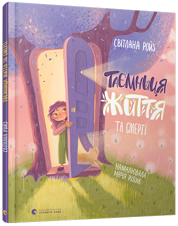

«Таємниця життя та смерті». Передпродаж
Дитина підростає і вперше у своєму житті усвідомлює людську смертність, зокрема і власну. Прийняття теми смерті, переживання її – одна із важливих криз у житті дитини. Без нього неможливе гармонійне дорослішання. Але це усвідомлення може дуже травмувати дитину, особливо якщо ця тема, досить табуйована в нашому суспільстві, так і залишиться непроговореною. Книжка відомої дитячої психологині Світлани Ройз «Таємниця Життя та смерті» – це власне спосіб, у який можна проговорити з дітьми цю непросту ...